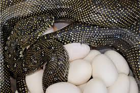

As cobras são serpentes venenosas pertencentes à família Elapidae. Elas são encontradas em várias partes do mundo, especialmente na África e na Ásia. As cobras são conhecidas por sua capuz distintiva, que elas podem expandir quando se sentem ameaçadas ou alarmadas. Esse capuz é formado por costelas alongadas e pele solta.
Aqui estão alguns pontos-chave sobre as cobras:
1. **Veneno:** obras peçonhentas são aquelas que possuem glândulas de veneno e são capazes de injetar esse veneno em suas presas ou em potenciais ameaças. Esse veneno é utilizado para imobilizar ou matar presas e, em casos de autodefesa, pode representar um perigo para seres humanos. Aqui estão alguns pontos adicionais sobre cobras peçonhentas:
a. ##Tipos de Veneno:## O veneno das cobras peçonhentas pode conter diferentes tipos de toxinas, como neurotoxinas, citotoxinas e hemorraginas. Cada tipo de veneno tem efeitos específicos no organismo da presa.
b. ##Sintomas:## Em humanos, picadas de cobras peçonhentas podem causar uma variedade de sintomas, dependendo do tipo de veneno e da quantidade injetada. Os sintomas podem incluir dor intensa, inchaço, náuseas, vômitos, dificuldade respiratória e, em casos mais graves, até mesmo a morte.
2. **Espécies:** Existem várias espécies de cobras, incluindo a cobra indiana (Naja naja), a cobra egípcia (Naja haje) e a cobra-rei (Ophiophagus hannah), que é a serpente venenosa mais longa do mundo.
3. **Habitat:** As cobras habitam uma variedade de ambientes, incluindo florestas, pastagens e regiões semi-desérticas. Elas são adaptáveis e podem ser encontradas em ecossistemas diversos.
4. **Alimentação:** As cobras são carnívoras e se alimentam principalmente de pequenos mamíferos, aves e outras serpentes. Elas usam o veneno para imobilizar e digerir suas presas.
5. **Comportamento:** As cobras são geralmente tímidas, mas podem ser agressivas quando ameaçadas. Elas são conhecidas pelo comportamento de dilatar o capuz, que usam como exibição defensiva para parecerem maiores e mais intimidadoras.
6. **Reprodução:** As cobras põem ovos, e o número de ovos pode variar dependendo da espécie. A fêmea geralmente guarda os ovos até que eles eclodam.
7. **Conservação:** Algumas espécies de cobras enfrentam ameaças devido à perda de habitat, conflitos entre humanos e animais selvagens e comércio ilegal. Existem esforços de conservação para proteger essas serpentes e seus habitats.
É importante observar que, embora as cobras possam ser perigosas devido ao seu veneno, elas desempenham um papel no ecossistema ajudando a controlar as populações de roedores. Se você encontrar uma cobra ou qualquer outra serpente na natureza, é essencial dar espaço e evitar provocá-las para evitar possíveis danos.
